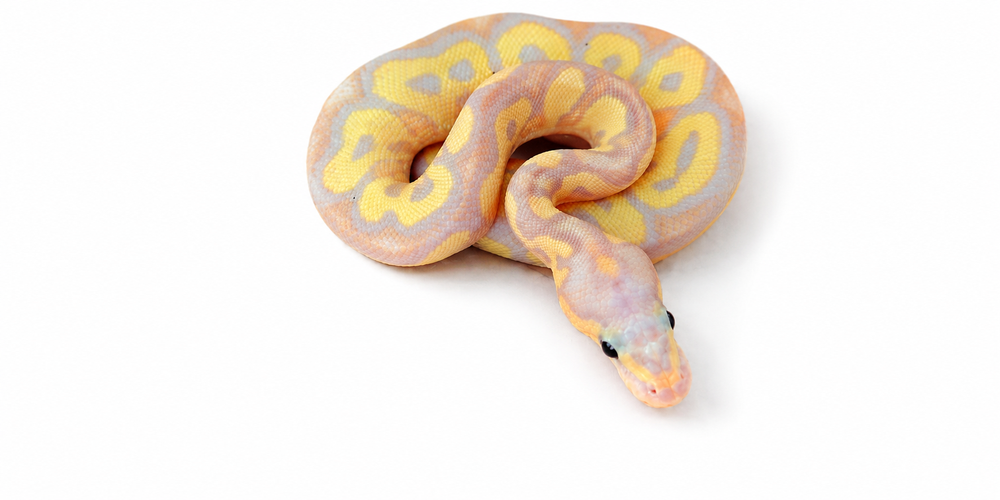

Especie: Ball Python
Sexo: Macho
Morph: Banana, Yellow Belly, Clown
Año: 2025
Peso: 188 g
Origen: CODE
Procedencia: PIMVS YAHUI by César Rico
Estado: Juvenil
Genes Dominantes Incompletos: Banana y Yellow Belly.
Gen Recesivo: Clown (visual).
Forma parte del Archivo Genético CODE como registro documental permanente.